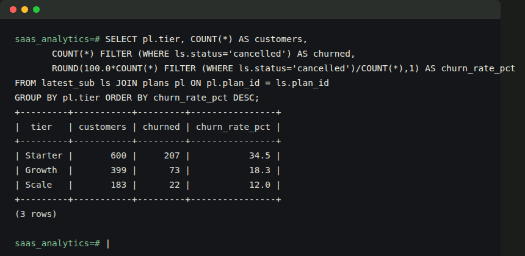

- customers — signup info, acquisition channel, industry (intentionally messy on load)
- plans — Starter / Growth / Scale tiers
- subscriptions — one row per subscription period; a customer can have several over time
- payments — every billing charge, including failed and refunded ones
- product_usage — monthly engagement per customer
- marketing_spend — spend by acquisition channel by month
PostgreSQL · SQL · Python
SaaS subscription analytics
A SQL-first project on a synthetic B2B SaaS business — 1,182 customers across a real 6-table schema, running on a live PostgreSQL database, built specifically to show joins, CTEs, and window functions rather than a single flat CSV.

Real output from a live PostgreSQL database — not a mockup.
Schema
What the SQL covers
- 01 — Data cleaning: normalizing inconsistent casing/whitespace, removing duplicate signups with
ROW_NUMBER() - 02 — Revenue: MRR trend and month-over-month growth using
LAG() - 03 — Churn & retention: churn by tier/billing/channel, 6-month cohort retention
- 04 — Product usage: does early engagement predict later churn?
- 05 — Marketing & CAC: customer acquisition cost and revenue-to-CAC ratio by channel
- 06 — Advanced:
RANK(),NTILE(), running totals, partitionedLAG()
Key findings
34.5%Starter-tier churn, vs 12.0% for Scale
46.2%churn rate for low-engagement customers, vs 13.8% for highly engaged ones
3.2×revenue-to-CAC ratio for Paid Search — the channel getting the most new budget, despite Referral running at 27×
69.9%of all revenue comes from the top revenue quartile of customers
Early product engagement predicts churn more strongly than which plan a customer is on. Combined with the CAC finding, the highest-leverage move isn't a pricing change — it's flagging low-engagement accounts in their first 60 days, before a cancellation request ever comes in.
Notes on the data
The dataset is synthetically generated, not real customer data. The patterns above were built into the generator's logic before any SQL was written, then found by querying it — the same way they'd be found in a real database, and nothing was decided after seeing the results.